01 · TATTOO
Fine line tattoos
Bloemen, fijne lijntjes en minimalistische ontwerpen. Heb je iets anders in gedachten? Ook andere stijlen zijn welkom.
Mini tattoo vanaf €80Kim tekent en zet fine line tattoos en zachte PMU. Steven plaatst je piercing met een vaste hand. Altijd op afspraak, in een studio waar de koffie al klaarstaat.
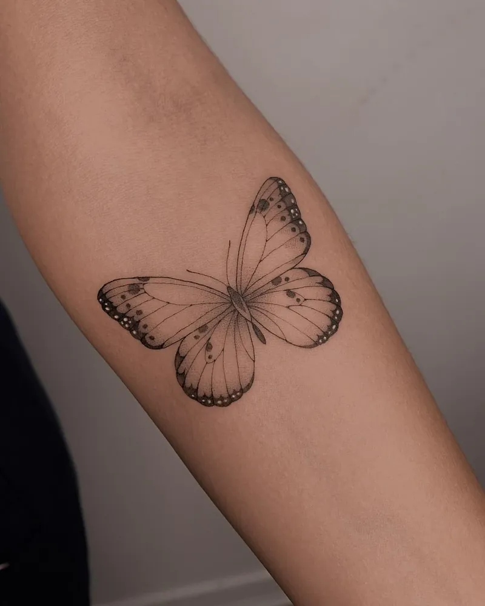
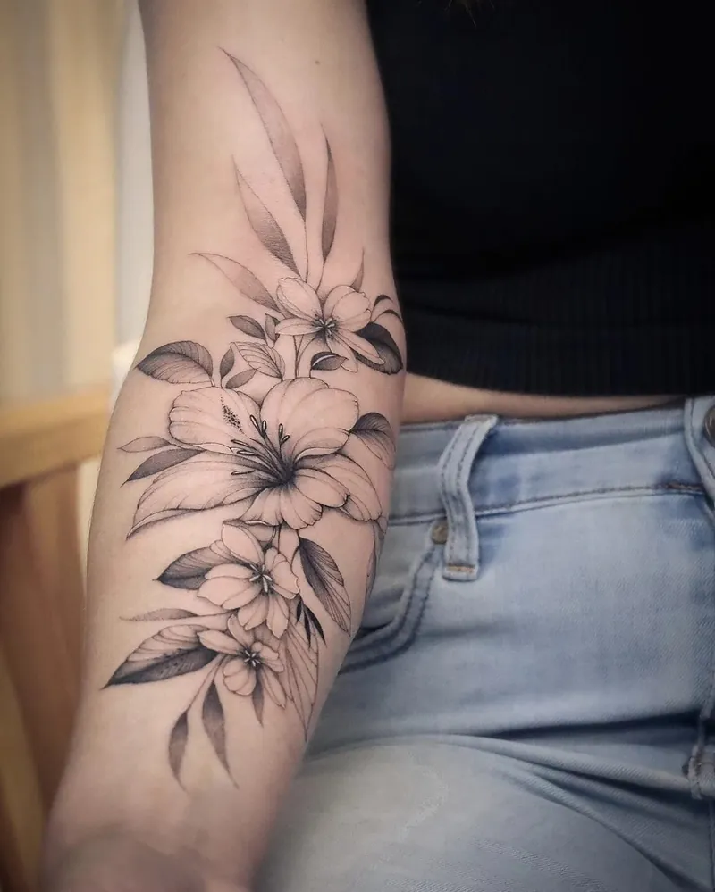
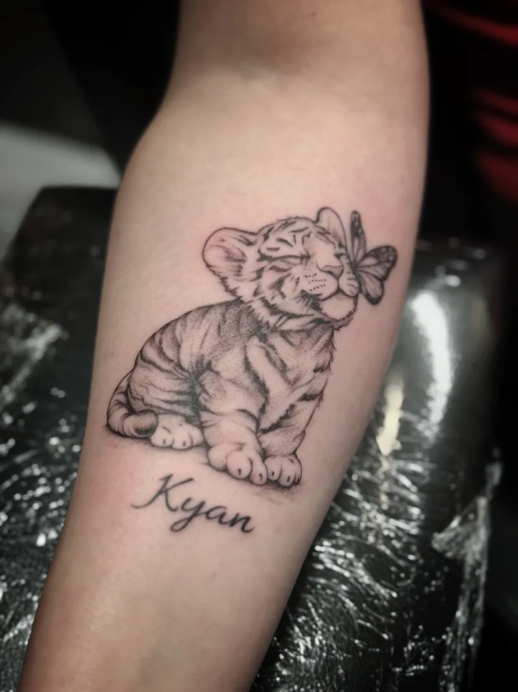
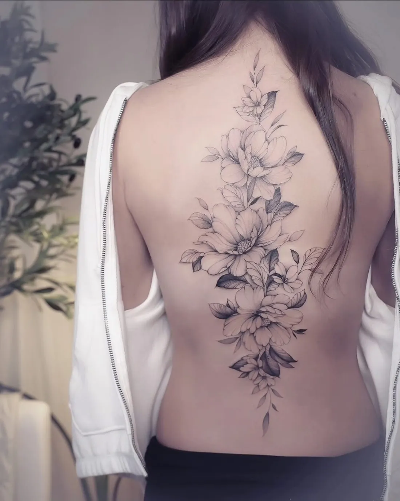
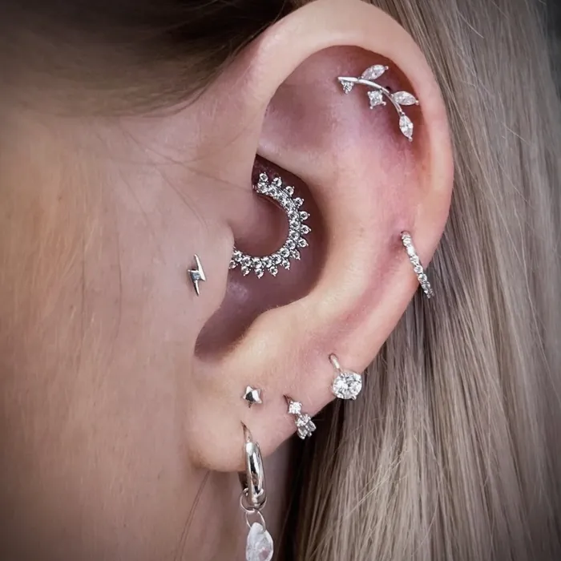
Tattoo, piercing, PMU en een kleine conceptstore. Alles onder hetzelfde dak, allemaal met dezelfde zorg.
Bloemen, fijne lijntjes en minimalistische ontwerpen. Heb je iets anders in gedachten? Ook andere stijlen zijn welkom.
Mini tattoo vanaf €80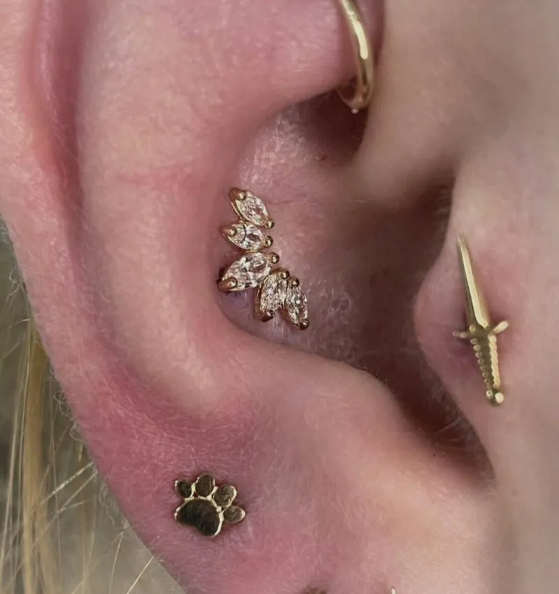
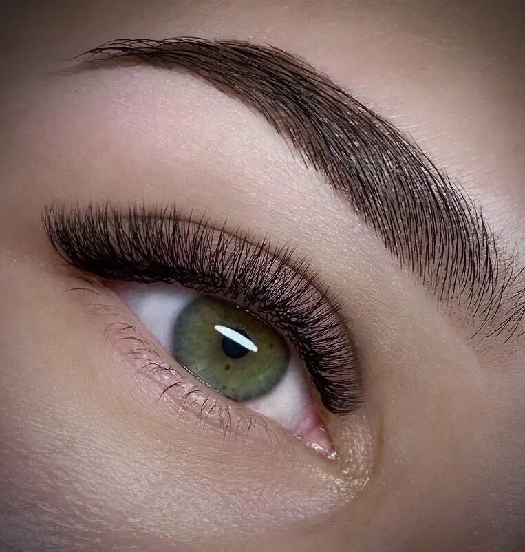
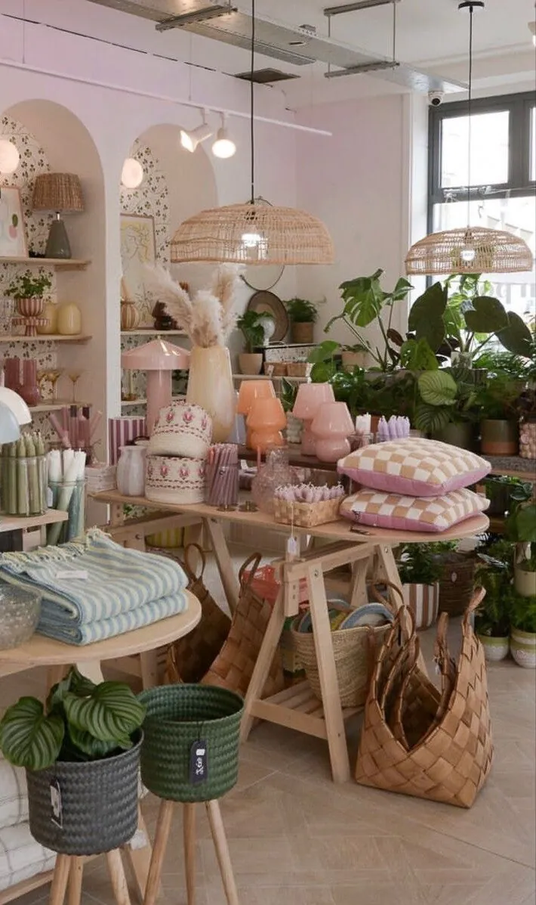
Juwelen, geurkaarsen, prints en kleding die passen bij de sfeer van de studio. Rondkijken kan op afspraak of tijdens een open dag.
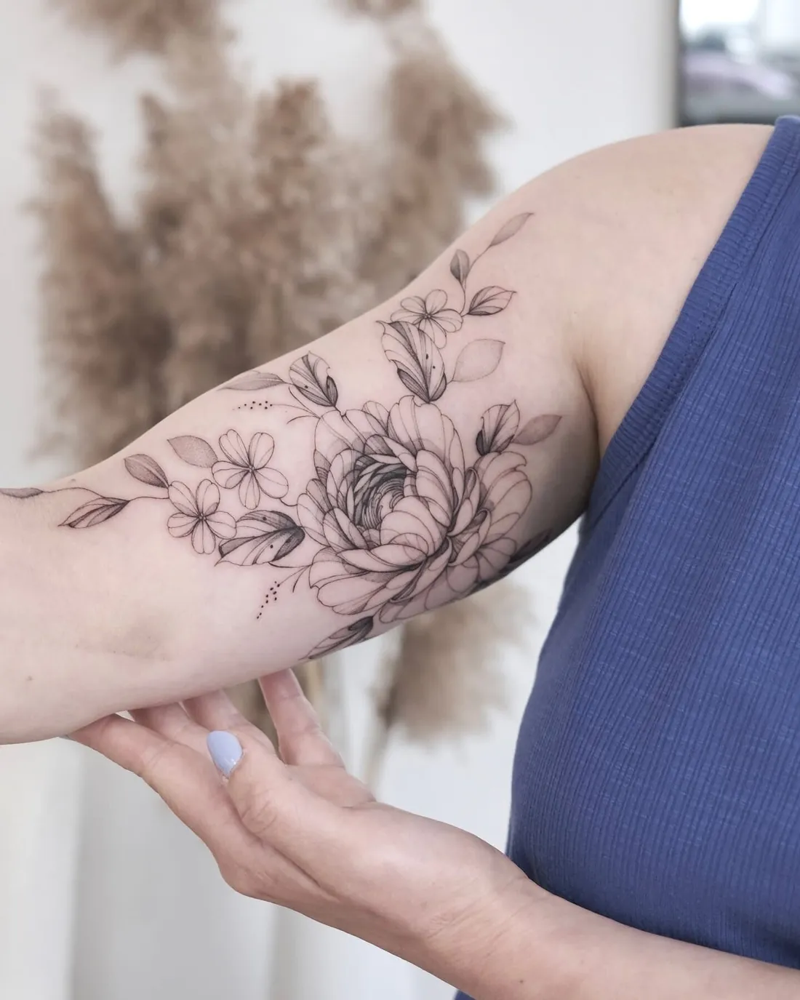
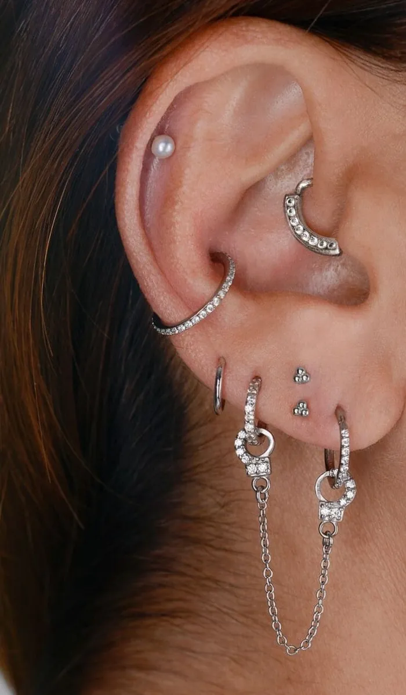
Kim vertaalt wat je voelt naar fine line tattoos en PMU die zacht blijven, ook na jaren. Steven zorgt voor de piercings, met oog voor symmetrie en wat bij jouw oor of gezicht past.
De studio groeide stap voor stap. De ruimte waar we nu zitten, heeft Steven zelf omgebouwd. Er is plaats om drie klanten tegelijk te ontvangen, en toch voelt het huiselijker dan ooit.
We bespreken je idee, de stijl en de plaats op je lichaam. Rustig, zonder haast.
Kim werkt je ontwerp met de hand uit. Ben je tevreden, dan leg je met een voorschot je afspraak vast.
We nemen alle tijd voor jou. Daarna krijg je duidelijke nazorg mee, en je mag altijd terugkomen met vragen.
Een greep uit wat er de voorbije maanden in de stoel gebeurde. Elk stuk werd eerst met de hand getekend.
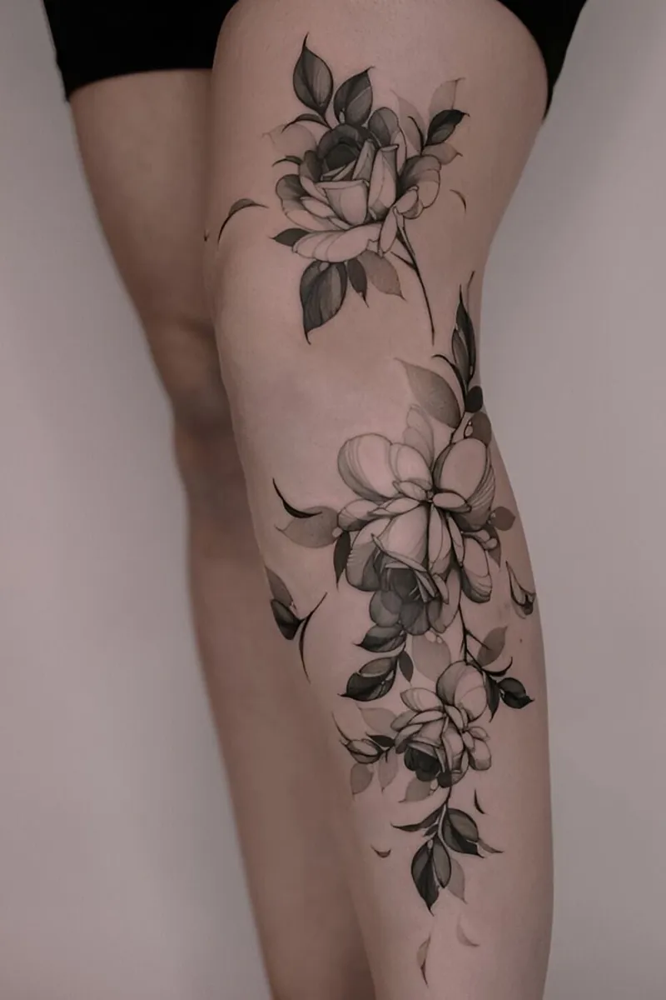
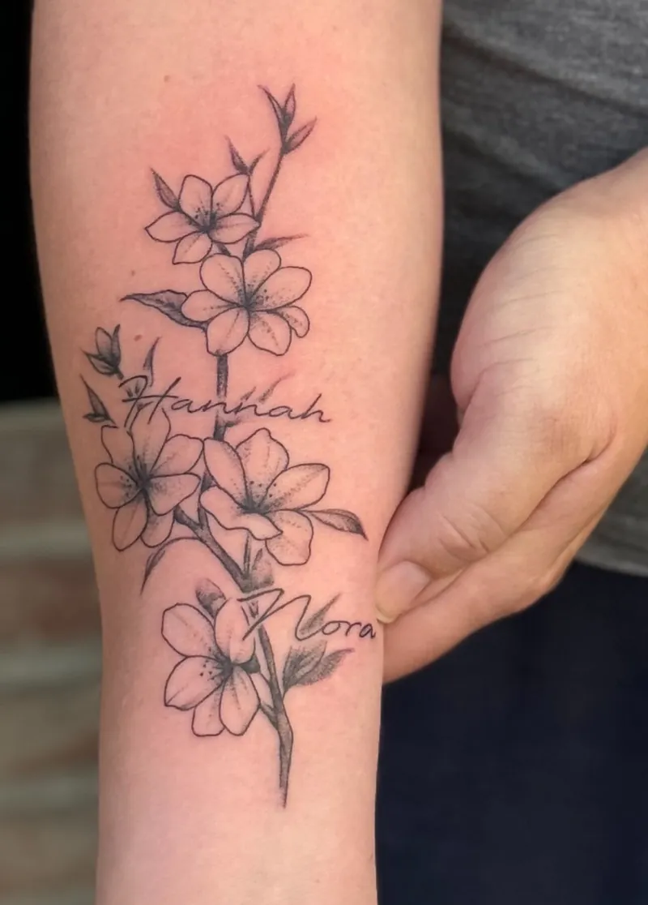
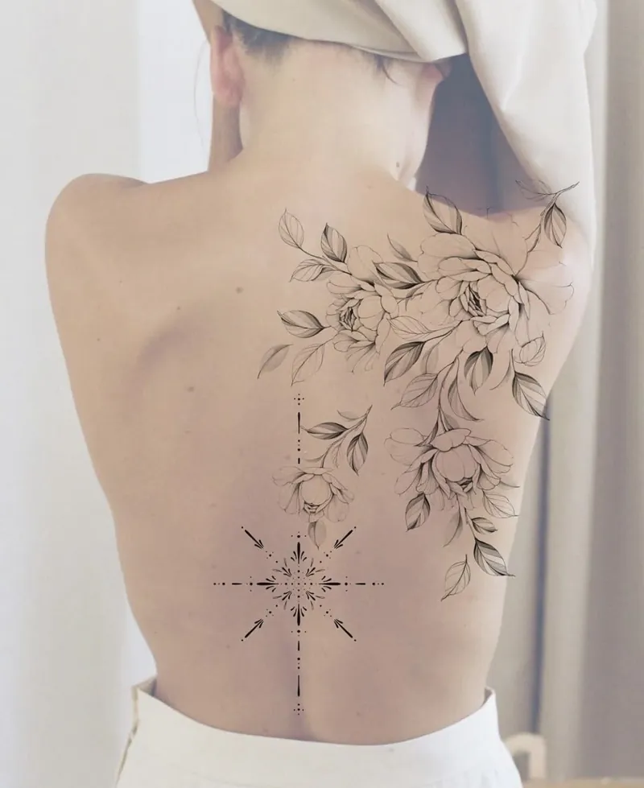
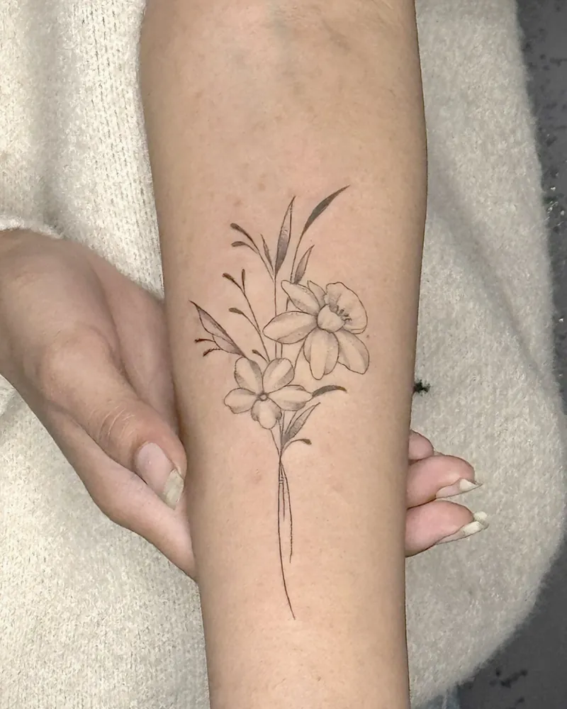
Ik ben al jaren klant bij Alyruh Tattoo & Beauty en ik ben altijd tevreden met het resultaat. De vriendelijke service en professionele aanpak maken het elke keer weer een plezier om hier langs te komen.
Stuur ons je idee, een paar referentiebeelden en waar je hem wil. Dan denken we met je mee over stijl, grootte en prijs.
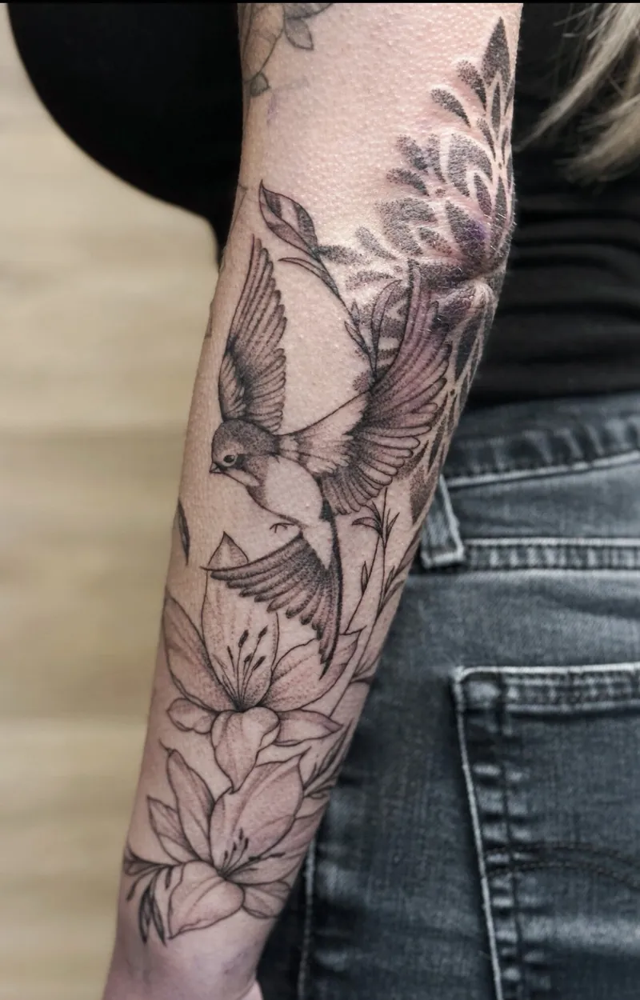
Ik maakte deze demo voor jullie om te tonen wat er kan. Na een kort gesprek maak ik er iets veel persoonlijkers van, helemaal naar jullie wens.
Vrijblijvend. Ik kom langs of we bellen.
Op maat, op jullie eigen domein.
Geen voorschot. Jullie betalen pas als alles klaar is.
Hosting, domeinnaam en kleine wijzigingen, zoals nieuwe openingsuren.
Omdat een voorbeeld meer zegt dan een mail. Zo zien jullie meteen wat er kan, en het kost jullie niets.
Nee. Het gesprek is vrijblijvend. Vinden jullie het niks, dan is het daarmee gedaan.
Na ons gesprek staat jullie site binnen 10 tot 14 dagen online.
Zeker. Jullie domeinnaam kan gewoon blijven, de nieuwe site komt in de plaats van de oude.
Nee, dat doe ik op basis van ons gesprek. Eigen foto's zijn mooi meegenomen, maar niet nodig om te starten.